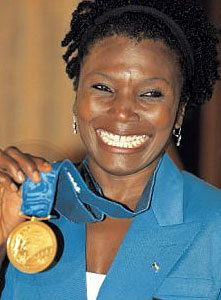
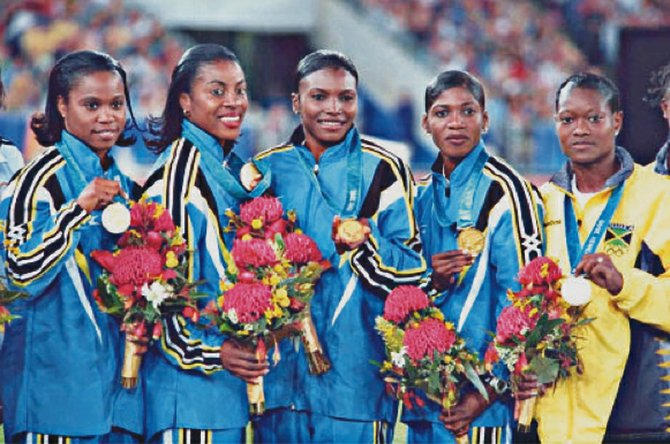
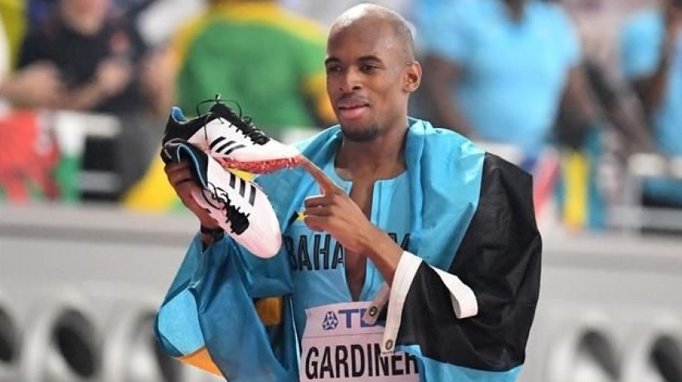
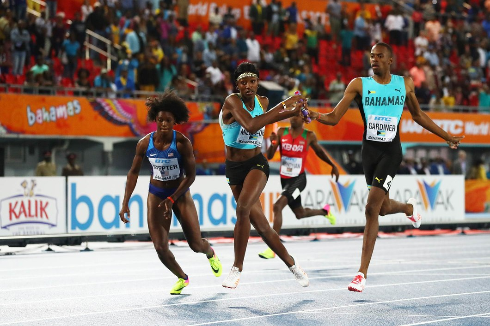

Bahamian athletes have won a total of fourteen medals, all in athletics and sailing.They participated in other events such as boxing diving and swiming and field events like discuss trow, jeveling trow, triple jump, long jump and high jump they even tried out tennis and rowing later on in the years.
Pauline DavisThompson
Profession
District Marketing Manager/Coach
Positions held within the IAAF
IAAF Council Member since 2007
IAAF Women’s Committee 2003 - 2007
Additional Information
Education:
Graduate of the University of Alabama, and a NCAA champion
Sports career:
Olympic Games from Los Angeles 1984 to Sydney 2000 (retired after Games)
World Championships in Athletics from Helsinki 1983 to Seville 1999.
Active athletic career has spanned local regional and international competition, and includes gold medals as part of the 400m Relay in the Olympics and World Championships, individual silver medals in both Olympic Games and World Championships, and both silver and bronze medals in the World Championships.
Click here for IAAF Athlete Biography
Post-competition career:
2000 to present Coach
Her protégés include Bahamian Christine Amertil, a silver medallist in the IAAF World Championships and Monique Hennigan from the United State, finalist in those same Championships.
Awards
2003 - Officer of the British Empire (OBE)
2001 - Order of Merit Award as a member of the Olympic and World Championships Relay Team. This is the highest Bahamian Honour
1998 - Silver Jubilee Award
Davis-Thompson competed for 20 years in International Track and field events including a record 7 appearances in the World Outdoor Championships and 5 Olympic Games Davis. She won the silver medal in the 200m at the Sydney Olympics running her personal best of 22.27 seconds; the third best time of the year 2000. She also ran In 1999 Davis-Thompson was at the World Indoor Championships in Maebashi, Japan winning a bronze medal in the 200m. At the World Outdoor Championships in Seville she also ran on the gold medal winning
She first ran with a group of females; Eldece Clarke-Lewis, Debbie Ferguson, Sevatheda Fynes, and Chandra Sturrup on the Bahamian National team that would eventually become known as “The Golden Girls” in 1996 taking the silver medal in the 400-metre relay at the Olympic games in Atlanta, Georgia. The “Girls” would also win a gold in the 400m-relay at the World Outdoor Championships in Seville.
On September 30th 2000, in her final International appearance, Davis-Thompson, ran the third leg of the 400m relay winning a gold medal. Davis-Thompson and the other “Golden Girls” enjoy an immense popularity in the Bahamas, a mural bearing their image greets visitors at the Nassau International Airport, a stamp has been issued in their honor and in 1998, the Governor-General of The Bahamas presented the Golden Girls with a silver Jubilee Award for their contributions to athletics.
Pauline Davis-Thompson is the recipient of the Charley Major Award for the Bahamian Track and Field Athlete of the Year, and is still the Bahamas' national record holder in the 400 meters.
Intrigue, Passion and unpredicyability make mixed 4X400M relay a crowd favourite.
After a raucous debut at the IAAF world relays Earlier this year, track star steven Gardiner predicts dancing in the steets fo the bahamas when the mixed 4X400M relays Athletes line us at the starting blocks at theolympic games Tokyo 2020
“It’s going to be awesome because most of the countries are small and don’t have a full relay team, so the mixed relay will give a lot of other countries a chance to win a medal at the Olympics,” the 21-year-old steven Gardiner said, adding with a grin, “like The Bahamas.”

“It was one of the best atmospheres, the crowd was awesome. Everybody was so excited,” laughed Gardiner.
After soaking up the vibe in his home stadium and celebrating with teammates he’s barely ever had the opportunity to race with, you can understand why Gardiner thinks adding the event to the Tokyo 2020 programme is a “great idea”.
The Bahamian team is a good example of the type of NOC that will hope to benefit from the event’s Olympic debut. While the Caribbean nation boasts a top-class men’s 4x400m team, which claimed bronze at the Olympic Games Rio 2016, the women’s squad failed to make the final in Rio de Janeiro last summer. Put the two squads together, however, and you have genuine gold medal contenders.
It is no wonder Gardiner, who set a new national 400m record of 44.26 seconds earlier this season, is “very excited” at the prospect.